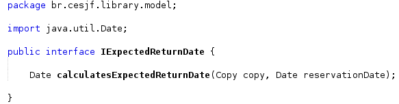
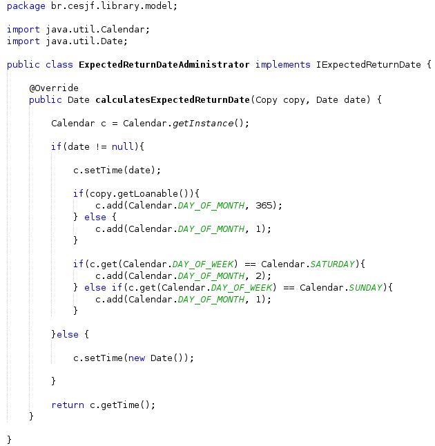
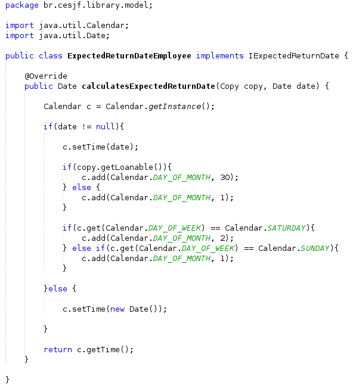
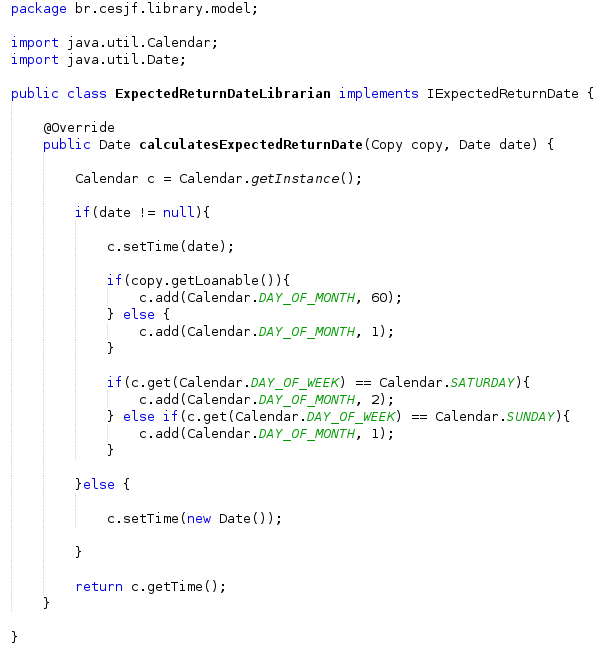
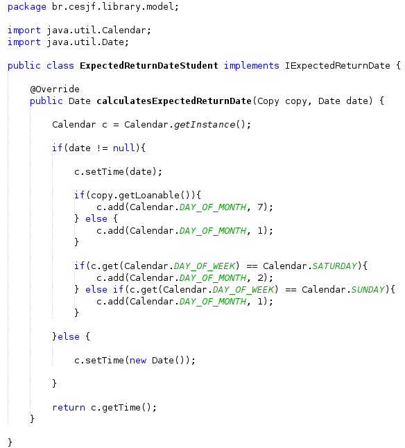
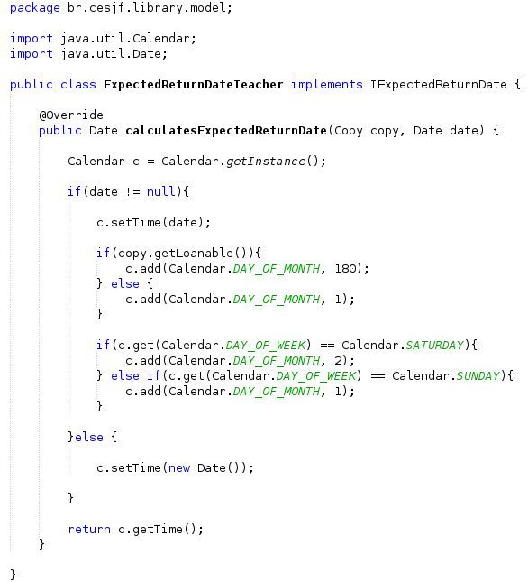
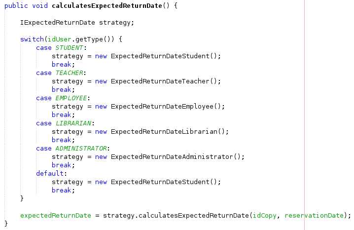
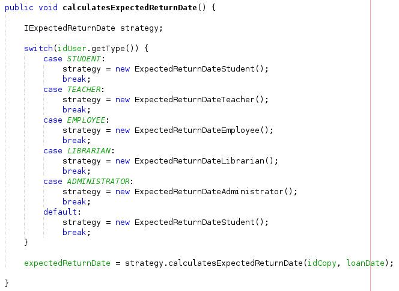

Strategy
O Strategy é um padrão de projeto comportamental que permite que você defina uma família de algoritmos, coloque-os em classes separadas, e faça os objetos deles intercambiáveis.
Ele foi utilizado nas classes Model abaixo:
- IExpectedReturnDate (Interface)
- ExpectedReturnDateAdministrator (Implementaçao para cálculo de data de devolução prevista para usuário de tipo Administrador)
- ExpectedReturnDateEmployee (Implementaçao para cálculo de data de devolução prevista para usuário de tipo Funcionário)
- ExpectedReturnDateLibrarian (Implementaçao para cálculo de data de devolução prevista para usuário de tipo Bibliotecário)
- ExpectedReturnDateStudent (Implementaçao para cálculo de data de devolução prevista para usuário de tipo Aluno)
- ExpectedReturnDateTeacher (Implementaçao para cálculo de data de devolução prevista para usuário de tipo Professor)
- Reservation (Uso do Strategy no método calculatesExpectedReturnDate)
- Loan (Uso do Strategy no método calculatesExpectedReturnDate)
Exemplo de implementação:
Interface:

Implementaçao para cálculo de data de devolução prevista para usuário de tipo Administrador:

Implementaçao para cálculo de data de devolução prevista para usuário de tipo Funcionário:

Implementaçao para cálculo de data de devolução prevista para usuário de tipo Bibliotecário:

Implementaçao para cálculo de data de devolução prevista para usuário de tipo Aluno:

Implementaçao para cálculo de data de devolução prevista para usuário de tipo Professor:

Exemplo de uso do Strategy:
Uso do Strategy no método calculatesExpectedReturnDate na classe Reservation:

Uso do Strategy no método calculatesExpectedReturnDate na classe Loan:
